Introducción
Una pregunta multivariada sobre el desarrollo
El desarrollo de un país no puede reducirse a una sola variable. El nivel de ingreso importa, pero también importan la salud de la población, la estructura productiva, la urbanización, la conectividad, la estabilidad macroeconómica y la forma en que la economía se integra al comercio internacional. Dos países con un PBI per cápita parecido pueden tener perfiles muy distintos si uno es más urbano, más longevo, más conectado o menos dependiente de la agricultura que el otro. Por eso el problema pide naturalmente un enfoque multivariado: no se trata solo de ordenar países por una variable, sino de entender qué dimensiones comunes organizan un conjunto amplio de indicadores y si, a partir de esas dimensiones, aparecen grupos de países con perfiles reconocibles.
La pregunta que guía el trabajo es la siguiente: ¿cuántas dimensiones latentes son necesarias para describir las diferencias de desarrollo entre países y qué conglomerados emergen al comparar sus perfiles completos? Para responderla se usan dos técnicas complementarias. El Análisis de Componentes Principales (PCA) resume variables numéricas correlacionadas en ejes ortogonales interpretables; el análisis de conglomerados agrupa países por similitud sin imponer de antemano una clasificación. La primera técnica permite sintetizar e interpretar; la segunda permite explorar si esa estructura continua se traduce, o no, en grupos empíricamente estables.
La elección de PCA es metodológicamente adecuada porque el conjunto de datos está formado principalmente por variables numéricas medidas en escalas diferentes pero conceptualmente relacionadas. En ese contexto, el PCA trabaja sobre la estructura de correlaciones y permite detectar redundancias: si el ingreso, la esperanza de vida, la urbanización y el uso de Internet se mueven juntos, un componente puede capturar esa dimensión compartida. En cambio, las variables categóricas disponibles, región y nivel de ingreso del Banco Mundial, no se incorporan como variables activas porque convertirlas en dummies alteraría las distancias y mezclaría información externa con el espacio construido a partir de indicadores de desarrollo. Se usan, en cambio, como variables suplementarias para interpretar y validar los resultados.
Como hipótesis inicial, esperamos encontrar una dimensión dominante asociada al desarrollo general de los países: mayor ingreso, más salud, mayor conectividad, mayor urbanización y menor peso de la agricultura. Sin embargo, también esperamos que esa dimensión no agote el problema. La composición sectorial, la apertura comercial o la coyuntura macroeconómica pueden variar con relativa independencia del nivel de desarrollo. El trabajo contrasta esta intuición con datos, justifica cada decisión de preprocesamiento y evalúa la robustez de las conclusiones.
Desarrollo
Datos, unidad de análisis y decisiones de construcción
La base proviene de los World Development Indicators del Banco Mundial. La unidad de análisis es el país en un corte transversal anual. Se excluyen agregaciones como regiones, grupos de ingreso o el total mundial, porque no son unidades comparables con países individuales y distorsionarían tanto el PCA como las distancias del clustering. Luego de ese filtrado se trabaja con países reales identificados por código ISO-3.
El corte principal es 2023. Esta decisión no se tomó solamente por ser el año más reciente con buena disponibilidad, sino porque evita dos años macroeconómicamente atípicos: 2021, dominado por el rebote posterior a la pandemia, y 2022, afectado por el shock inflacionario global y la guerra en Ucrania. En métodos basados en varianzas, correlaciones y distancias, esos shocks pueden modificar artificialmente la importancia de variables como el crecimiento del PBI. El año 2023 conserva cobertura adecuada en las variables finales y representa mejor una situación macroeconómica normalizada. Para la comparación temporal se elige 2005 como año temprano porque es el primer corte a partir de 2000 en el que todas las variables seleccionadas superan el umbral de cobertura adoptado. Usar 2000 hubiera ampliado la ventana histórica, pero a costa de más faltantes y más dependencia de la imputación.
Regla metodológica central
Antes de aplicar las técnicas se asegura que las comparaciones sean justas: se trabaja con variables comparables entre países, se filtran unidades que no son países, se controlan faltantes, se corrigen asimetrías fuertes, se estandariza y recién después se aplican PCA y clustering. El objetivo no es forzar un resultado, sino evitar que las escalas, las colas pesadas o la cobertura desigual definan artificialmente los componentes y los grupos.
Variables seleccionadas
Se partió de un conjunto candidato de indicadores económicos, sociales, productivos y ambientales. La selección final incluye 14 variables numéricas. Se descartaron tres indicadores por razones metodológicas. El índice de Gini tiene cobertura muy baja y es esporádico, porque depende de encuestas de hogares no siempre disponibles. El gasto público en educación presenta baja cobertura en años tempranos, lo que comprometería la comparación temporal. El INB per cápita en paridad de poder adquisitivo tiene baja cobertura en 2005 y además es altamente redundante con el PBI per cápita, por lo que duplicaría la dimensión de ingreso.
La decisión prioriza comparabilidad temporal, cobertura y diversidad de dimensiones. El PBI per cápita usado está expresado en dólares constantes de 2015, por lo que se interpreta como ingreso real y no como una magnitud nominal afectada por inflación. Para emisiones se utiliza la serie de CO₂ per cápita compatible con la definición vigente del Banco Mundial.
| Dimensión | Indicadores numéricos |
|---|---|
| Nivel de ingreso | PBI per cápita real, en US$ constantes de 2015 |
| Coyuntura macroeconómica | Crecimiento anual del PBI, inflación, desempleo |
| Inversión e inserción comercial | Formación bruta de capital, exportaciones e importaciones como porcentaje del PBI |
| Estructura productiva | Participación de agricultura, industria y servicios en el valor agregado |
| Desarrollo social y conectividad | Población urbana, esperanza de vida, uso de Internet |
| Huella ambiental | Emisiones de CO₂ per cápita |
Faltantes, transformaciones y estandarización
Luego de aplicar un filtro por país, se conservan 192 países en 2005 y 191 en 2023. El máximo de faltantes por variable queda por debajo del 15% en 2005 y del 12% en 2023, niveles razonables para imputar sin que la imputación domine el análisis. La imputación se realiza con vecinos más cercanos sobre variables ya estandarizadas, porque las distancias solo tienen sentido si dólares, años, porcentajes y toneladas están puestos en una escala común. Además, se imputa cada año por separado para no usar información de 2023 al completar datos de 2005.
Las transformaciones se deciden variable por variable. El PBI per cápita se transforma con logaritmo natural porque es estrictamente positivo y recorre varios órdenes de magnitud. Las emisiones de CO₂ se transforman con logaritmo de uno más la variable, ya que admiten valores cercanos a cero. Variables con fuerte asimetría y posibilidad de valores negativos, como la inflación, se tratan con Yeo-Johnson[1]. Otras variables acotadas o con asimetría baja, como urbanización, esperanza de vida, servicios, formación de capital y crecimiento del PBI, se dejan sin transformar para no introducir una corrección innecesaria. La estandarización se aplica después de transformar: primero se corrige la forma de las distribuciones y luego se igualan las escalas.
Análisis univariado y bivariado
Qué forma tienen los datos antes de modelar
El análisis exploratorio permite entender el rango y la forma de las variables que luego entran al PCA y al clustering. En 2023, el PBI per cápita muestra una dispersión muy amplia: va aproximadamente de 265 a 115.125 dólares constantes de 2015, con mediana de 6.408. Esa distribución extremadamente asimétrica confirma que las diferencias entre países son más proporcionales que aditivas, por lo que el logaritmo es apropiado. Internet, en cambio, es una proporción acotada: su mediana llega a 81,3% en 2023, pero todavía existen países por debajo del 10%. La esperanza de vida tiene un rango más acotado, entre 54,5 y 85,7 años, y la urbanización va de 15,1% a 100%.
Estas distribuciones muestran que las variables no son intercambiables: algunas miden niveles de largo plazo, otras describen composición productiva y otras capturan coyuntura macroeconómica. El objetivo del preprocesamiento no es hacer que todas tengan la misma forma, sino evitar que una variable domine por su escala o por una cola extremadamente pesada.
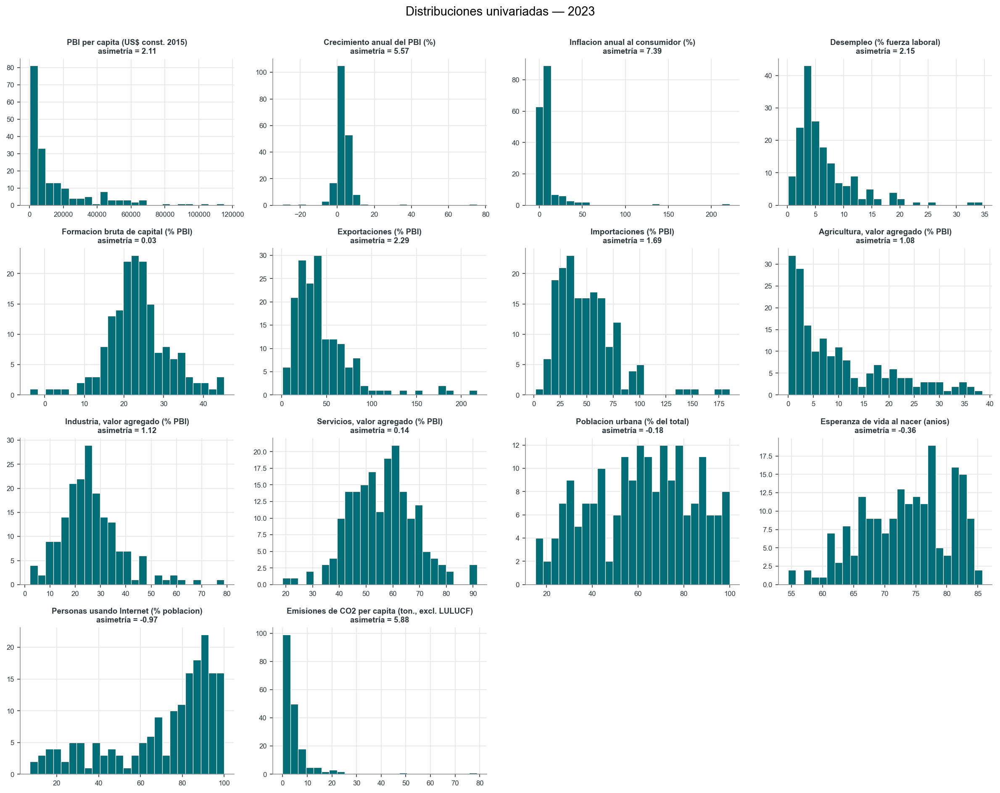
La estructura bivariada anticipa el resultado principal del PCA. PBI per cápita, esperanza de vida, uso de Internet, urbanización y emisiones de CO₂ tienden a moverse juntos, mientras que el peso de la agricultura se mueve en sentido contrario. En términos del problema, esto significa que existe un bloque coherente de desarrollo socioeconómico: los países con más ingreso también suelen ser más urbanos, más longevos, más conectados y menos agrarios. La matriz de correlaciones no se lee como causalidad; se lee como evidencia de redundancia multivariada, exactamente el tipo de estructura que el PCA resume.
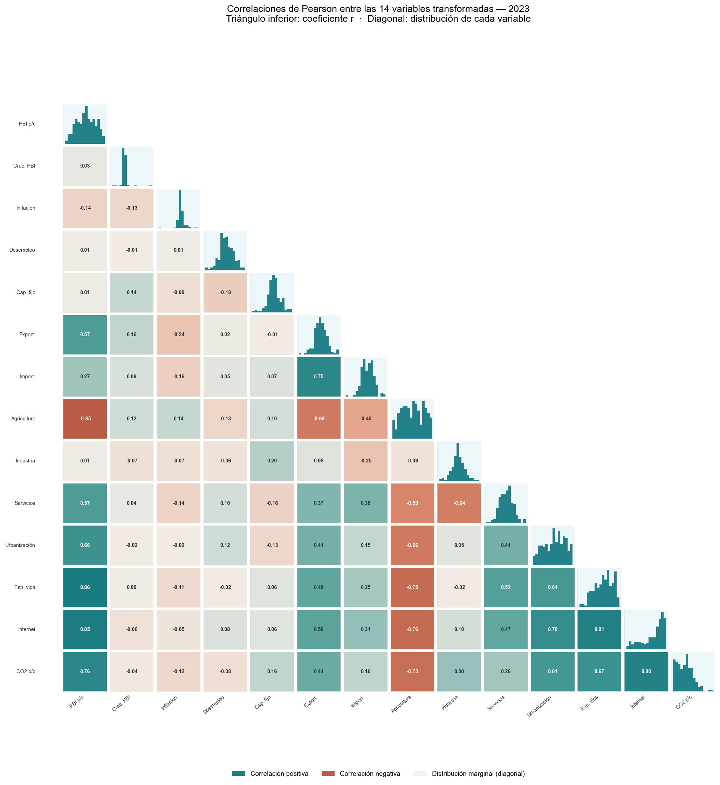
Las variables categóricas no participan en la construcción de los componentes ni de las distancias, pero son útiles para interpretar. Al comparar variables clave por nivel de ingreso oficial del Banco Mundial, aparece un patrón monótono: los países de mayor ingreso tienen mayor esperanza de vida, mayor uso de Internet y menor participación agrícola. Esta coherencia valida que los indicadores numéricos capturan aspectos sustantivos del desarrollo y no solo variación técnica o ruido.
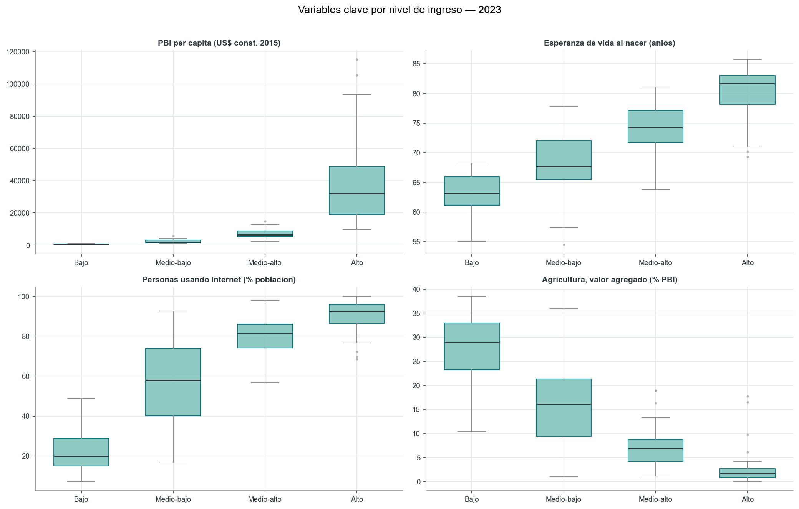
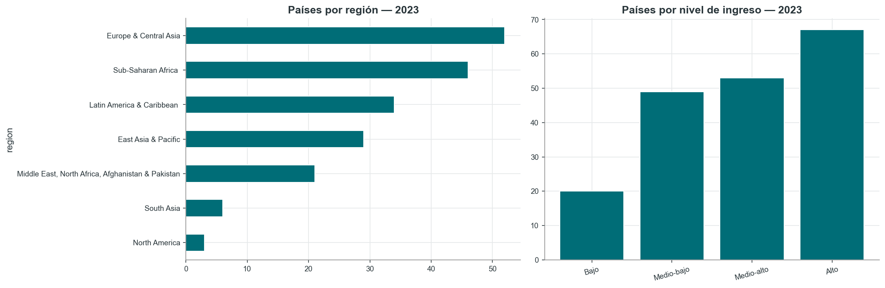
Técnica 1
Análisis de Componentes Principales
El PCA se aplica sobre las variables transformadas, estandarizadas e imputadas. Esta preparación es indispensable: las variables están en unidades distintas y no tendría sentido permitir que el PBI per cápita domine solamente porque se mide en dólares, o que una variable porcentual pese menos por tener menor escala nominal. Al trabajar con variables estandarizadas, el PCA equivale a estudiar la matriz de correlaciones y cada variable tiene, al inicio, el mismo peso potencial.
La técnica busca combinaciones lineales ortogonales que expliquen la mayor parte posible de la variabilidad. En términos del problema, un componente no es una variable nueva arbitraria: es un eje sintético que resume un patrón de países. Si ingreso, salud, conectividad y urbanización tienen cargas del mismo signo, el componente se interpreta como una dimensión de desarrollo. Si otro eje separa industria de servicios, captura una dimensión productiva diferente del nivel general de desarrollo.
Retención de componentes
La cantidad de componentes no se decide por conveniencia gráfica. Se comparan tres criterios: Kaiser, que retiene autovalores mayores a 1; el umbral de 80% de varianza acumulada; y el análisis paralelo de Horn[2], que contrasta los autovalores observados contra los que aparecerían en matrices aleatorias con la misma dimensión. Kaiser sugiere 4 componentes y el umbral de 80% llevaría a 6; Horn retiene 3. Como Horn controla explícitamente contra estructura que podría surgir por ruido, se adopta como criterio principal. Los 3 componentes retenidos explican 64,9% de la varianza total, suficiente para interpretar las dimensiones dominantes sin forzar una reducción excesiva.
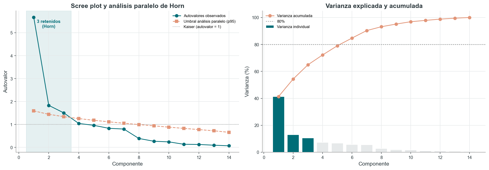
| Componente | Varianza explicada | Cargas principales | Interpretación |
|---|---|---|---|
| PC1 | 41,3% | PBI pc 0,935; agricultura -0,919; Internet 0,896; esperanza de vida 0,874; CO₂ pc 0,807 | Gradiente de desarrollo: mayor ingreso, conectividad, salud y urbanización frente a menor peso agrícola. |
| PC2 | 13,1% | Industria 0,893; servicios -0,639; CO₂ pc 0,416; capital 0,374 | Estructura productiva: separa perfiles más industriales de perfiles más terciarizados. |
| PC3 | 10,5% | Crecimiento 0,556; inflación -0,551; importaciones 0,510; exportaciones 0,445 | Apertura comercial y coyuntura macroeconómica: combina comercio, inversión, crecimiento y estabilidad de precios. |
Interpretación en términos del desarrollo
El primer componente es claramente un gradiente de desarrollo. Sus cargas positivas más altas corresponden al PBI per cápita, Internet, esperanza de vida, CO₂ per cápita y urbanización; la carga negativa más fuerte corresponde a agricultura. La lectura sustantiva es directa: a la derecha del eje aparecen países con mayor ingreso real, poblaciones más urbanas, mayor conectividad y mayor esperanza de vida; a la izquierda, países más agrarios y de menor desarrollo relativo. Que el CO₂ tenga carga positiva no implica una valoración normativa, sino que históricamente las economías de mayor ingreso han tenido mayor intensidad de emisiones per cápita.
El segundo componente agrega información que PC1 no captura. Separa economías con mayor peso industrial y de capital de economías más orientadas a servicios. Esta dimensión es importante porque evita reducir el desarrollo a una única escala: dos países pueden estar en niveles parecidos de PC1 y, sin embargo, diferir en su estructura productiva. El tercer componente captura una mezcla de apertura comercial y condiciones macroeconómicas. Exportaciones e importaciones cargan positivamente, mientras que la inflación carga en sentido contrario, lo que distingue economías más abiertas y con precios relativamente estables de perfiles más cerrados o inflacionarios.
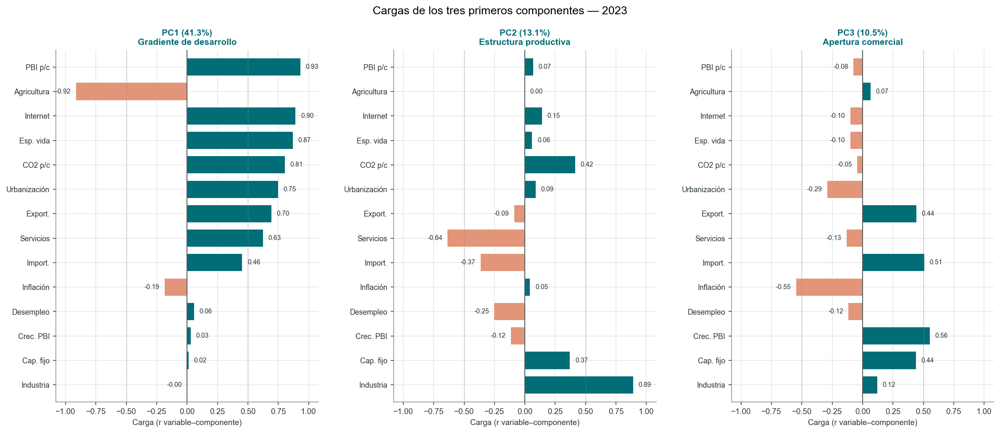
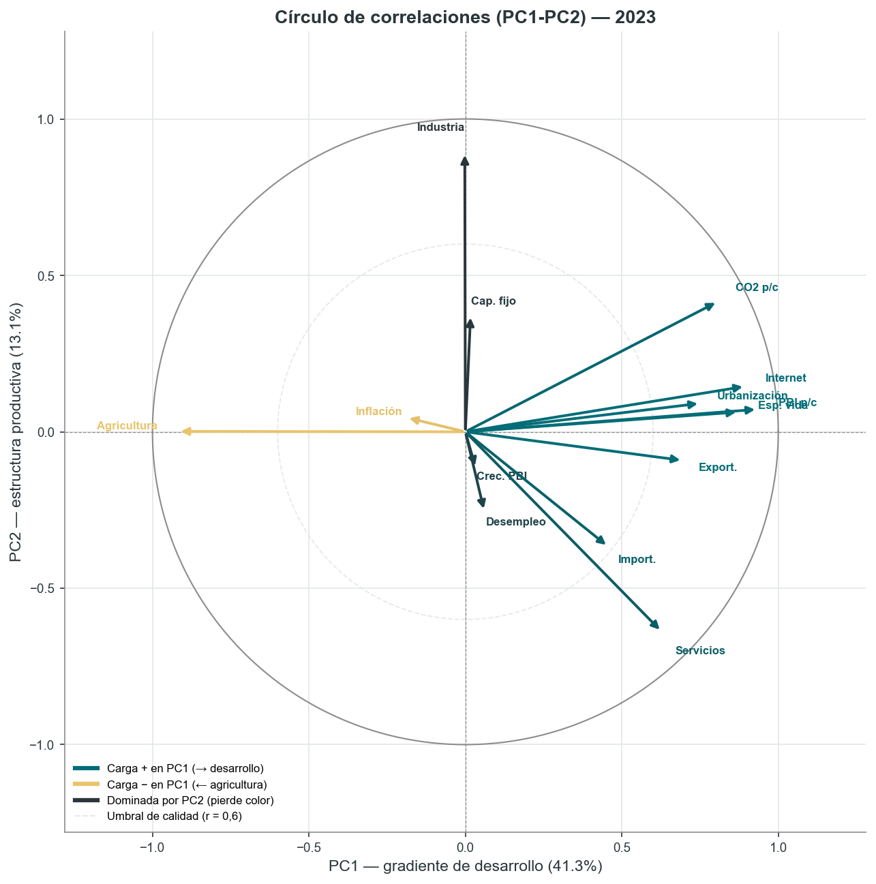
El biplot coloreado por nivel de ingreso confirma que una clasificación externa no usada en el ajuste se ordena de manera coherente sobre el PC1. Esto no significa que el PCA haya "aprendido" la etiqueta de ingreso, porque esa etiqueta no participó del cálculo. Significa que los indicadores numéricos contienen una estructura suficientemente fuerte como para reconstruir, desde otra perspectiva, diferencias sustantivas de desarrollo.
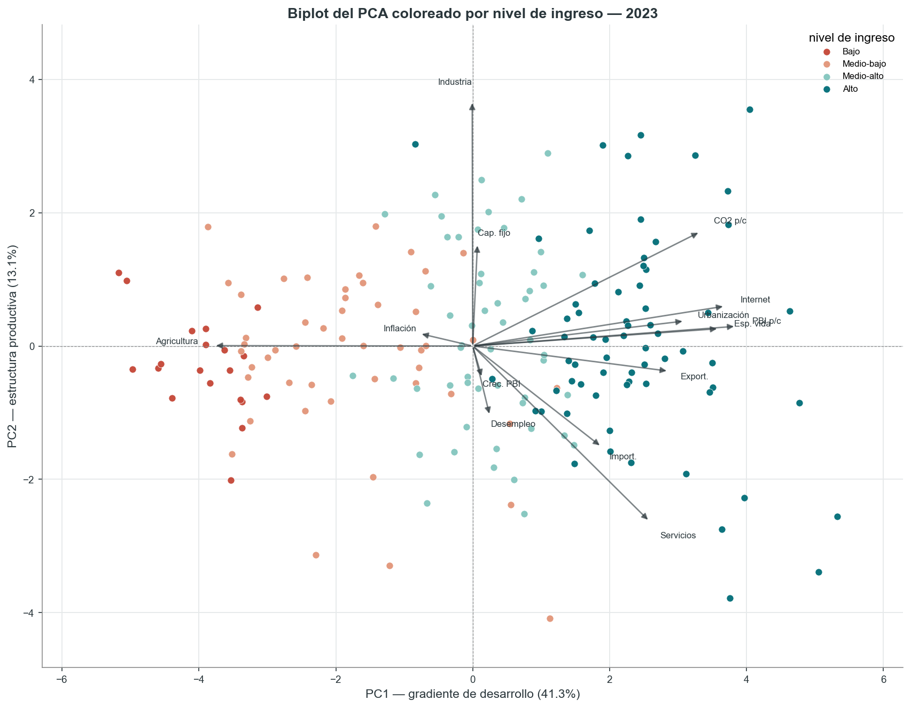
La distribución geográfica del PC1 confirma el gradiente norte-sur de desarrollo. Europa Occidental, América del Norte, Australia y Japón concentran los scores más altos. África subsahariana y partes del sur de Asia presentan los scores más bajos. América Latina ocupa una posición intermedia, con heterogeneidad interna notable. Al pasar el cursor sobre cada país se ve el score exacto.
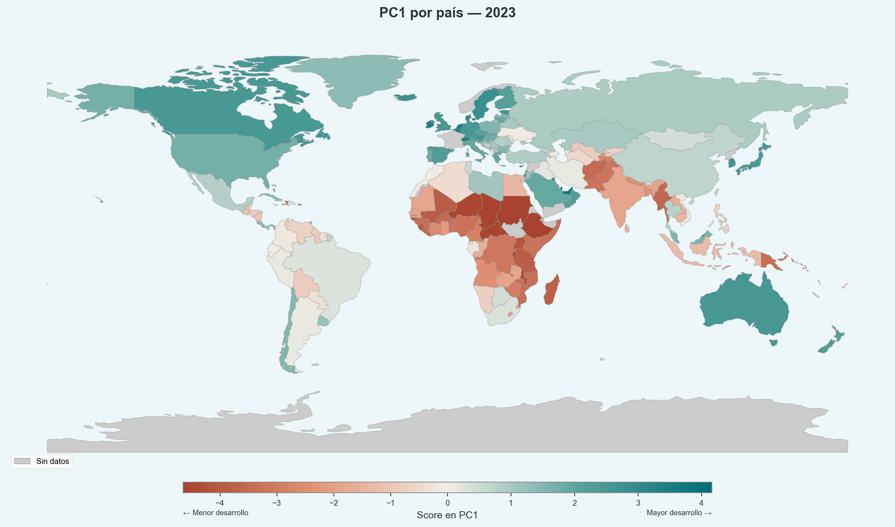
Técnica 2
Análisis de Conglomerados
El clustering se usa para responder una pregunta distinta a la del PCA. El PCA resume dimensiones; el clustering pregunta si los países se agrupan por perfiles completos. Como no se dispone de una etiqueta objetivo que defina a priori qué país pertenece a qué grupo, corresponde una técnica no supervisada. El objetivo no es reemplazar clasificaciones oficiales, sino descubrir si las similitudes multivariadas producen una partición interpretable.
Una decisión metodológica central es no hacer el clustering principal directamente sobre los componentes principales. Aunque reducir con PCA y luego agrupar es una práctica frecuente, puede ser riesgosa: el PCA conserva los ejes de mayor varianza, no necesariamente los ejes que separan mejor grupos. Con 14 variables no estamos en una dimensión tan alta como para necesitar una reducción previa obligatoria. Por eso la partición principal se calcula sobre las 14 variables transformadas y estandarizadas. Luego se compara contra la partición obtenida sobre los componentes retenidos. Para k = 2, ambas particiones son idénticas según el índice de Rand ajustado[3] (ARI = 1,000). La conclusión es importante: en este caso el uso de PCA antes de clusterizar no hubiera sesgado el resultado principal, pero esa equivalencia fue verificada y no asumida.
Algoritmos, número de grupos y estabilidad
Se evalúan k-means y clustering jerárquico de Ward. K-means es apropiado como punto de partida porque trabaja con distancia euclídea en un espacio numérico estandarizado y produce centros interpretables. Ward sirve como contraste jerárquico porque minimiza la varianza intragrupo al fusionar clusters. El número de conglomerados se elige por consenso entre métricas internas, estadístico gap y estabilidad por remuestreo. La convergencia favorece k = 2: silhouette[4], Calinski-Harabasz[5], Davies-Bouldin[6] y gap statistic[7] apuntan a dos grupos. La estabilidad bootstrap[8] es muy alta para k = 2, con Jaccard medio de 0,96 y 0,94 en los dos grupos. Para k = 3 la solución sigue siendo informativa, pero menos estable; para k = 4 un grupo se disuelve.
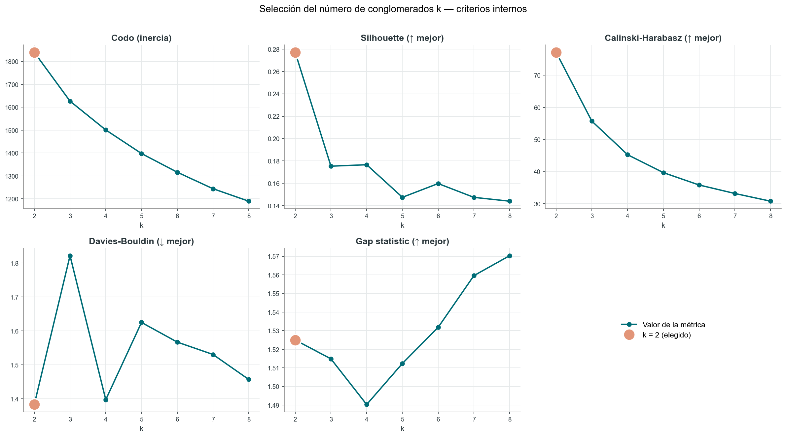
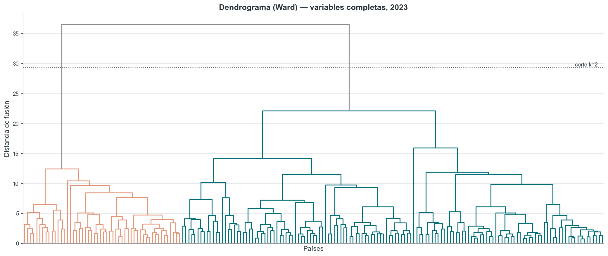
La silueta promedio para k = 2 es 0,277 sobre las 14 variables. Es un valor moderado, no excepcional, y eso es sustantivamente coherente: el desarrollo se comporta más como un continuo que como un conjunto de bloques perfectamente separados. Métodos alternativos refuerzan esta interpretación. Un modelo de mezclas gaussianas coincide de forma moderada con k-means (ARI = 0,623), y HDBSCAN identifica dos núcleos densos pero deja aproximadamente 59,2% de los países como ruido. En otras palabras, el clustering ofrece una macro-separación útil entre países desarrollados y países en vías de desarrollo, pero no debe presentarse como una taxonomía natural y cerrada.
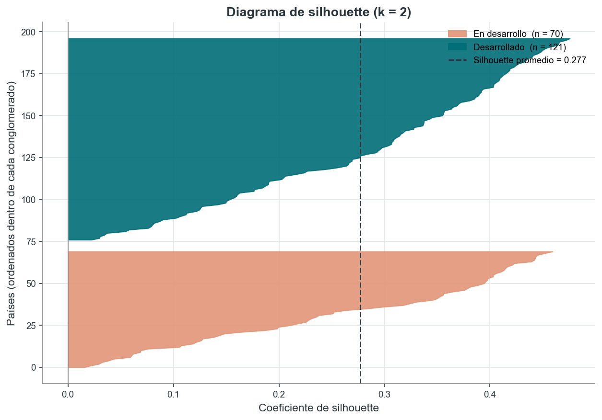
Perfil de los conglomerados
La partición principal produce 70 países en el grupo de menor desarrollo relativo y 121 en el grupo de mayor desarrollo relativo. Por claridad interpretativa, los denominamos países en vías de desarrollo y países desarrollados. Esta denominación resume perfiles multivariados, no juicios normativos. Las medianas muestran diferencias sustantivas: el grupo desarrollado tiene un PBI per cápita mediano de 14.933 dólares constantes de 2015, contra 1.439 en el grupo en vías de desarrollo; esperanza de vida de 77,7 años contra 66,9; uso de Internet de 87,1% contra 42,2%; y agricultura de 3,0% del PBI contra 19,2%.
| Indicador | Países en vías de desarrollo | Países desarrollados |
|---|---|---|
| PBI per cápita real | 1.439 | 14.933 |
| Esperanza de vida | 66,9 años | 77,7 años |
| Población urbana | 41,2% | 74,0% |
| Uso de Internet | 42,2% | 87,1% |
| Agricultura sobre PBI | 19,2% | 3,0% |
| Servicios sobre PBI | 48,0% | 60,3% |
| Exportaciones sobre PBI | 22,7% | 44,9% |
| CO₂ per cápita | 0,54 t | 4,40 t |
Al cruzar los grupos con el nivel de ingreso oficial del Banco Mundial aparece una asociación muy fuerte: chi-cuadrado de 135,8 con p aproximadamente 2,2 x 10^-28 para k = 2. El grupo en vías de desarrollo incluye 20 países de bajo ingreso y 42 de ingreso medio-bajo; el grupo desarrollado contiene 66 de los 67 países de ingreso alto y 47 de ingreso medio-alto. Las excepciones son analíticamente interesantes: algunos países de ingreso medio-alto aparecen en el grupo en vías de desarrollo por su estructura productiva, urbanización o conectividad; algunos de ingreso medio-bajo aparecen en el grupo desarrollado por mostrar perfiles estructurales más avanzados que su ingreso.
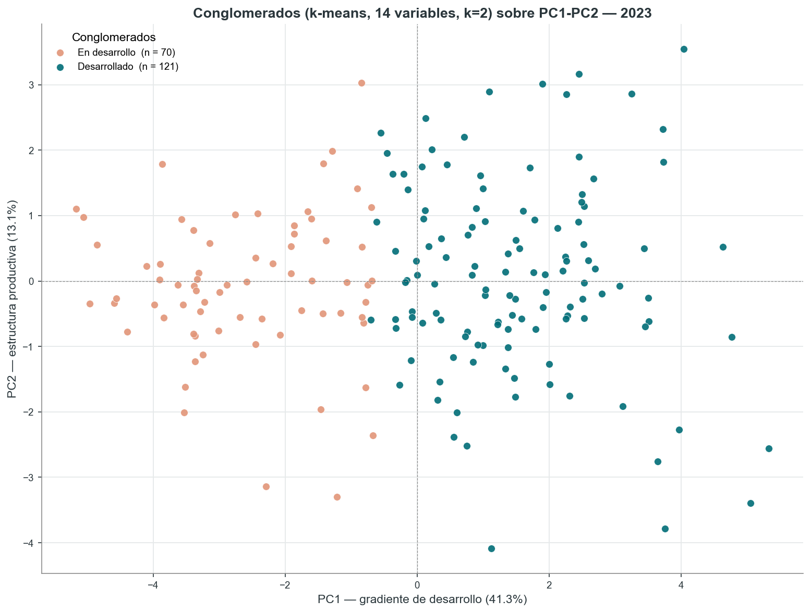
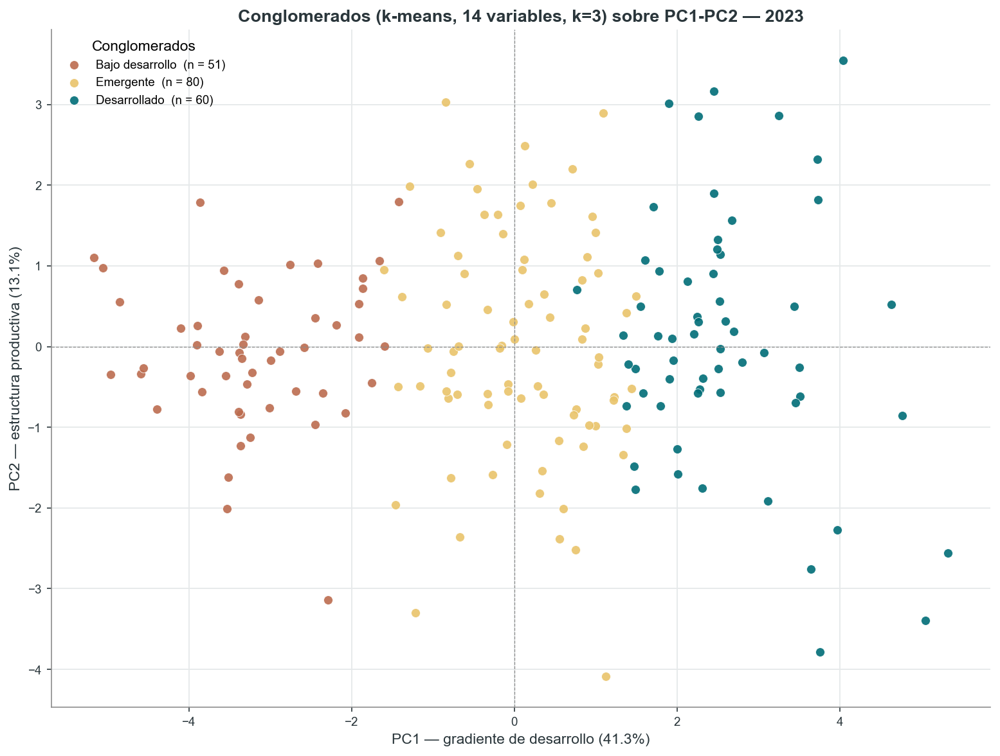
El dendrograma de Ward apunta a k = 3 como corte natural, pero conviene comparar el método jerárquico con k-means en las dos particiones de interés. Por eso repetimos exactamente las dos vistas anteriores —k = 2 y k = 3— pero usando el algoritmo de Ward en lugar de k-means. Todo lo demás se mantiene igual: las 14 variables completas, la misma proyección sobre PC1 y PC2, y el mismo criterio de ordenamiento de los grupos por su PC1 medio (de bajo a alto desarrollo), de modo que los colores son comparables figura a figura.
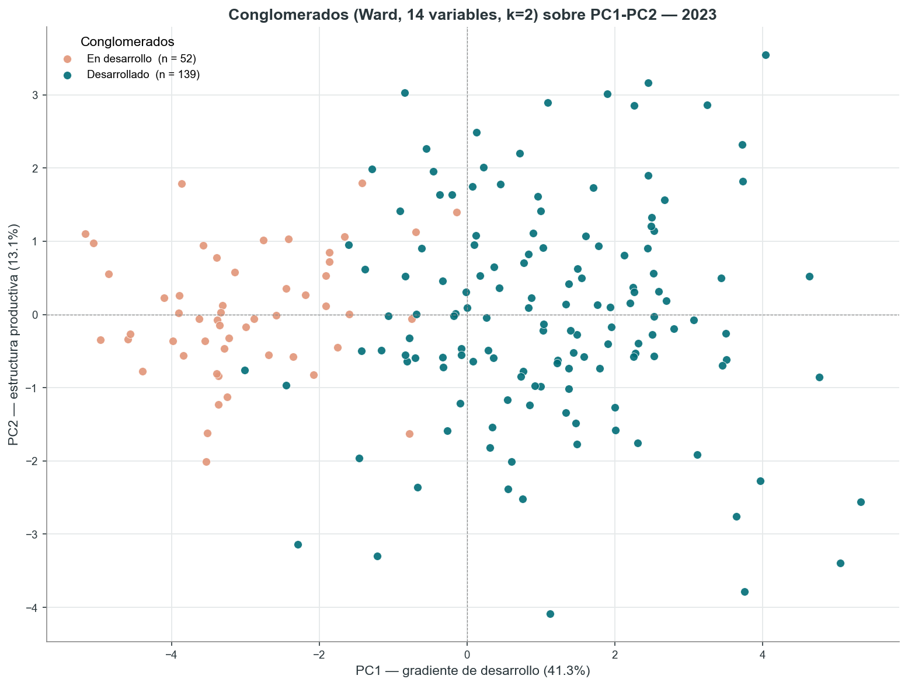
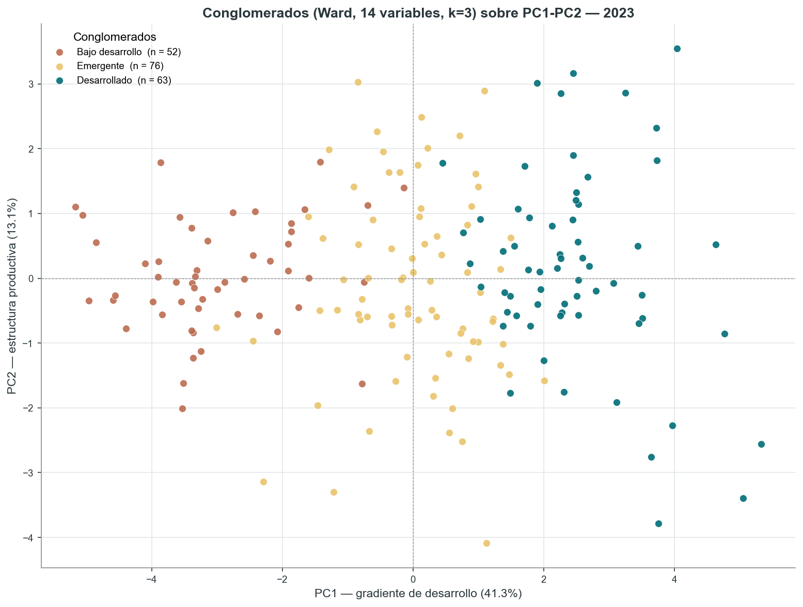
Qué cambia. El contraste entre las dos k es informativo. En k = 3 las particiones de Ward y k-means coinciden casi por completo (índice de Rand ajustado de 0,75): solo 16 de 191 países cambian de grupo, con tamaños casi idénticos (Ward 52 / 76 / 63 contra k-means 51 / 80 / 60) y reacomodos limitados a la frontera difusa del grupo emergente. En k = 2, en cambio, los métodos difieren algo más (Rand ajustado de 0,62; 20 países reasignados): Ward no parte el continuo por la mitad sino que aísla primero un núcleo compacto de bajo desarrollo (52 países) y agrupa al resto como desarrollado (139), mientras que k-means produce un corte más equilibrado (70 contra 121). Esa diferencia es esperable —Ward minimiza el aumento de varianza intra-grupo al fusionar y tiende a desprender primero el grupo más homogéneo, en vez de optimizar centroides—. Lo relevante es que ningún método inventa estructura: ambos ordenan a los países a lo largo del mismo gradiente de PC1, y la segmentación en tres grupos resulta especialmente robusta al cambio de algoritmo.
Comparación temporal
2005 frente a 2023: estructura estable y movilidad relativa
La comparación temporal requiere una precaución metodológica central. No se pueden ajustar dos PCA independientes, uno para 2005 y otro para 2023, y luego comparar directamente las coordenadas: los ejes podrían rotar, cambiar de signo o escalarse distinto. Por eso la comparación estructural se realiza en un espacio común, ajustado sobre los dos años apilados con las mismas transformaciones y la misma estandarización. Aun así, comparar posiciones absolutas sobre PC1 puede ser engañoso, porque varias variables que definen el desarrollo tienen tendencia secular global.
El caso más claro es Internet: su mediana pasa de aproximadamente 10,1% en 2005 a 81,3% en 2023. La esperanza de vida también aumenta. En el espacio común, estas mejoras desplazan a casi todos los países hacia el lado de mayor desarrollo, pero ese desplazamiento no necesariamente significa que un país haya ganado posición frente a sus contemporáneos. La descomposición del avance medio absoluto del PC1 confirma el problema: Internet explica 47,4% del corrimiento y la esperanza de vida 22,2%, mientras que el PBI per cápita real explica 9,4%. Por eso el informe interpreta el cambio temporal con posición relativa dentro de cada año, no con coordenadas absolutas.
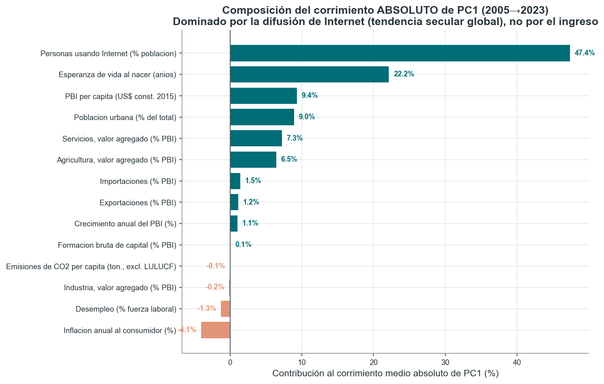
La medida relativa usa dos lecturas. La primera clasifica países dentro de cada año en dos tiers, de modo que "desarrollado en 2005" significa desarrollado respecto de los países de 2005, no respecto de los estándares de 2023. Con este criterio hay 107 países desarrollados sobre 192 en 2005 y 121 sobre 191 en 2023. La segunda lectura rankea a cada país por percentil de PC1 dentro de su propio año. El cambio de percentil muestra si un país ganó o perdió posición relativa frente a sus pares.
En el panel común de 183 países, 15 pasan del tier en vías de desarrollo al tier desarrollado, y solo 1 realiza el movimiento inverso. Entre los mayores ascensos relativos aparecen Georgia, China y Mongolia. Entre los mayores descensos se observan Venezuela, Líbano y Argentina, casos consistentes con trayectorias económicas y sociales problemáticas en el periodo. La estructura del PC1, sin embargo, permanece estable: la congruencia de Tucker entre las cargas de 2005 y 2023 es 0,962 y la correlación entre cargas es 0,946. Es decir, el significado del gradiente de desarrollo se mantiene; lo que cambia es la posición relativa de algunos países dentro de ese gradiente.
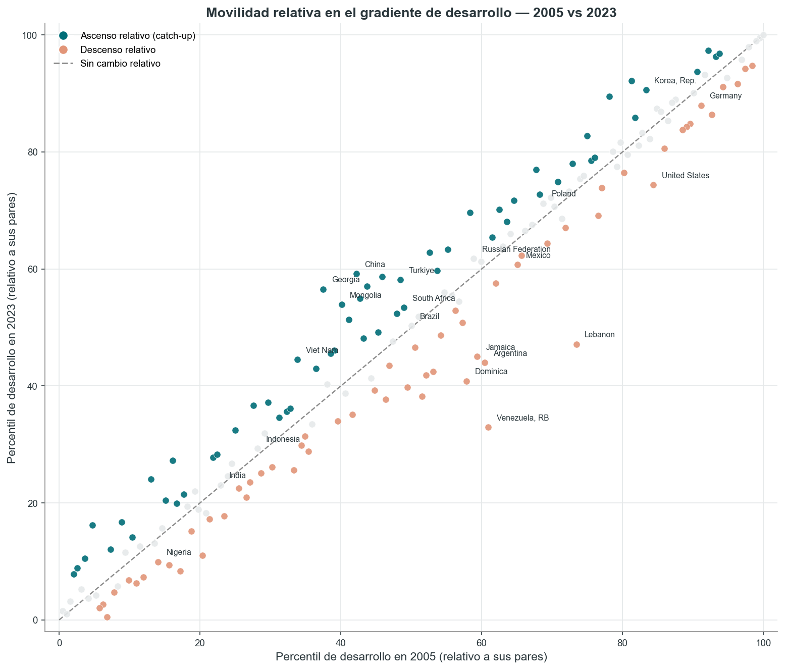
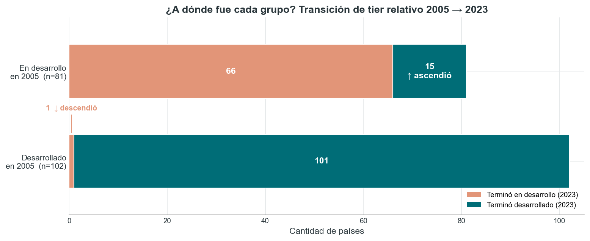
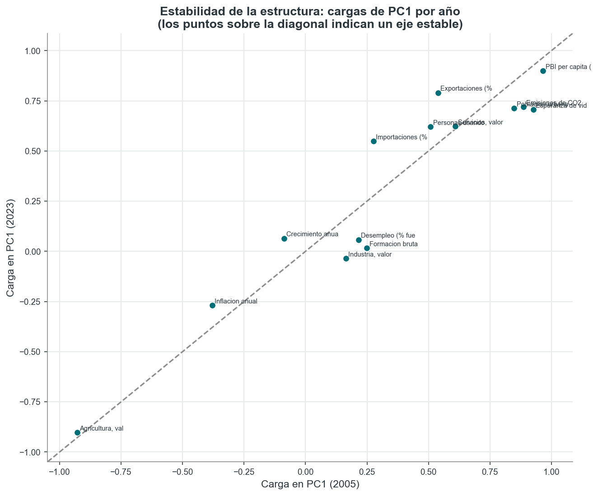
Robustez
Análisis de sensibilidad y límites de interpretación
Una conclusión es confiable si no depende de una sola decisión técnica. Para comprobarlo, se fija una configuración base —estandarización clásica (restar la media y dividir por el desvío), imputación de faltantes por vecinos más cercanos (KNN), las 14 variables completas y k-means con k = 2— y se la compara contra variantes razonables: otra forma de imputar, otro escalado, clusterizar sobre componentes en lugar de variables, y quitar países atípicos.
Cada variante se resume con dos números simples. El primero, el índice de Rand ajustado (ARI), responde a la pregunta «¿quedan los mismos países agrupados juntos?»: vale 1 cuando la partición es idéntica a la base, alrededor de 0 cuando el parecido es el que se esperaría por azar, y puede ser negativo si es aún peor. El segundo, la correlación de las cargas de PC1, responde a «¿el eje de desarrollo significa lo mismo?»: compara el peso que cada variable tiene sobre PC1 en la variante contra el de la base, de modo que un valor cercano a 1 indica que el componente conserva su composición e interpretación. En resumen: el primer número mira si los grupos se mantienen, el segundo si el eje principal se mantiene.
Leída con esa clave, la tabla muestra que casi todo es estable. La forma de imputar es indiferente: tanto MICE (un método iterativo alternativo) como descartar los faltantes y quedarse solo con casos completos reproducen prácticamente la misma partición y el mismo PC1 que KNN, señal de que los datos faltantes no están dirigiendo el resultado. Tampoco importa si se clusteriza sobre las variables o sobre 2, 3 o 5 componentes del PCA, ni si se quitan los 10 países más extremos: en todos los casos el ARI se mantiene alto y las cargas de PC1 casi no cambian.
La única excepción es instructiva: reemplazar la estandarización clásica por un escalado robusto (que divide por el rango intercuartil en vez de por el desvío) sobre todos los países rompe la partición (ARI = -0,004) y cambia por completo el significado de PC1. El motivo es puntual y no general: el crecimiento del PBI de Macao en 2023 es un valor extremo, y al dividir por un rango intercuartil pequeño ese dato se amplifica tanto que el PCA —que persigue la mayor varianza— lo toma como eje principal. Al quitar solo ese país, el resultado se recompone en gran medida (ARI = 0,743). Esta prueba justifica la estandarización clásica de la base: el desvío estándar absorbe mejor esa cola extrema y evita que un rebote puntual secuestre el primer componente.
| Variante | ARI vs. base | Correlación cargas PC1 | n |
|---|---|---|---|
| Imputación MICE | 0,958 | 1,000 | 191 |
| Casos completos | 1,000 | 0,996 | 135 |
| RobustScaler, todos los países | -0,004 | 0,009 | 191 |
| RobustScaler sin Macao | 0,743 | 0,925 | 190 |
| Clustering sobre 2 PCs | 0,938 | 1,000 | 191 |
| Clustering sobre 3 PCs | 1,000 | 1,000 | 191 |
| Clustering sobre 5 PCs | 1,000 | 1,000 | 191 |
| Sin 10 outliers | 0,934 | 0,982 | 181 |
Las limitaciones principales son sustantivas y metodológicas. El análisis es transversal y descriptivo, por lo que no identifica relaciones causales. El clustering resume una macro-separación útil, pero el desarrollo se comporta como un continuo; por eso los grupos deben interpretarse como perfiles agregados y no como categorías naturales rígidas. La comparación temporal se basa en posición relativa para evitar confundir progreso secular global con movilidad frente a pares. Finalmente, los indicadores del Banco Mundial pueden tener rezagos, revisiones y cambios de definición, razón por la cual se trabaja con un snapshot fijo.
Conclusiones
Resultados principales
El desarrollo de los países presenta una dimensión dominante, pero no es estrictamente unidimensional. El primer componente del PCA explica 41,3% de la variabilidad y se interpreta de forma clara como un gradiente de desarrollo: combina ingreso real, salud, conectividad, urbanización y menor peso agrícola. Sin embargo, los componentes siguientes muestran que también importan la estructura productiva, la apertura comercial y la coyuntura macroeconómica. En consecuencia, el PBI per cápita es central, pero no suficiente para describir el perfil de desarrollo de un país.
El clustering identifica una macro-separación robusta entre países desarrollados y países en vías de desarrollo. La partición de dos grupos está respaldada por métricas internas, estabilidad bootstrap y una fuerte asociación con el nivel de ingreso oficial del Banco Mundial. A la vez, la evidencia obliga a una interpretación cuidadosa: la silueta es moderada y HDBSCAN encuentra un gran conjunto de puntos intermedios, por lo que el fenómeno se entiende mejor como un gradiente con cortes útiles que como un conjunto de grupos naturalmente separados.
Entre 2005 y 2023, la estructura del desarrollo se mantiene estable. Lo que cambia con fuerza es el nivel absoluto de ciertas variables, especialmente la difusión de Internet y la esperanza de vida. Por eso la comparación válida no es preguntar si todos los países se movieron hacia la derecha del PC1, sino si ganaron o perdieron posición relativa frente a sus contemporáneos. Bajo esa lectura, 15 países ascienden de tier y 1 desciende en el panel común. China, Georgia y Mongolia muestran ascensos relativos destacados; Venezuela, Líbano y Argentina pierden posición relativa de forma marcada.
En términos metodológicos, el trabajo muestra por qué cada decisión importa: elegir 2023 evita shocks macroeconómicos recientes; elegir 2005 equilibra horizonte temporal y cobertura; transformar y estandarizar impide que escalas y colas pesadas dominen; retener componentes con Horn evita quedarse con ruido; clusterizar sobre variables completas y comparar contra PCA evita asumir sin prueba que la reducción no afecta los grupos. La conclusión final es que el enfoque multivariado no solo confirma intuiciones generales sobre desarrollo, sino que permite ver matices que una sola variable no alcanza a mostrar.
Apéndice
Reproducibilidad, archivos y preparación para interactividad
Archivos principales del proyecto
src/run_all.py: orquesta el pipeline completo.src/config.py: define indicadores, años, rutas, semillas y umbrales.src/prep.py: aplica transformaciones, estandarización e imputación.src/pca.py: ajusta PCA, análisis paralelo de Horn y gráficos asociados.src/clustering.py: selección de k, k-means, Ward, estabilidad y perfilado.src/compare_years.py: comparación 2005-2023 en espacio común y movilidad relativa.src/sensitivity.py: variantes de robustez.data/processed/: resultados tabulares usados en el informe.reports/figures/: figuras estáticas copiadas a esta carpeta final.
Salidas tabulares relevantes
cobertura_por_anio.csv: cobertura por variable y año.reporte_limpieza.json: países conservados, descartados y panel común.pca_info_2023.json,pca_loadings_2023.csv,pca_autovalores_2023.csv: resultados del PCA.clustering_resultados_2023.json,perfil_medianas_k2_2023.csv,cruce_ingreso_k2_2023.csv: resultados de clustering.trayectorias.csv,transiciones_cluster.csv,descomposicion_dPC1.csv: comparación temporal.sensibilidad.csv: tabla de sensibilidad.
Estructura HTML para gráficos interactivos
Cada figura se encapsula en un bloque figure.figure-card. El informe
adopta un modelo estático por defecto, interactivo bajo demanda,
para que la lectura y el desplazamiento de la página nunca queden capturados por
el zoom o el hover de un gráfico:
-
En la página cada figura se muestra como una imagen estática
(
img.figure-imgapuntando al.png). No tiene zoom, tooltips ni desplazamiento: es solo lectura. -
Al pulsar «Ampliar» (o hacer clic sobre la figura) se abre un
modal a pantalla casi completa donde se carga la versión interactiva de Plotly
desde
figures/<nombre>.htmldentro de un<iframe>. Solo ahí se habilitan hover con valores exactos, zoom y paneo. Al cerrar el modal el<iframe>se descarta y la figura vuelve a su estado estático. -
Algunas figuras clave (scree, biplot, mapa, descomposición del corrimiento
de PC1 y comparación de cargas) están marcadas con
data-inline-interactivey se embeben ya interactivas en la página, sin pasar por el modal; su.pngqueda oculto como respaldo de impresión. -
Las figuras marcadas con
data-zoom-image(las transiciones de tier, Figura 19) se amplían mostrando solo la imagen estática en grande: ahí el hover no aporta información adicional. -
El mapa es un caso especial: se dibuja con Plotly directamente
en la página a partir de
assets/worldmap.data.js(un volcado depca_scores_2023.csv), con hover, zoom y paneo activos. La geometría mundial se descarga de la CDN de Plotly, por lo que el mapa requiere conexión a internet; el resto del informe funciona sin conexión.
La interactividad y el modal viven en assets/report.js; la construcción
del mapa en assets/worldmap.js; los estilos en assets/styles.css.
Los HTML interactivos por figura se generan con src/interactive.py (más una
copia única de plotly.min.js para funcionar sin conexión) y los PNG provienen
del pipeline de análisis (eda/pca/clustering/compare_years).
Técnicas no cubiertas en el programa de la materia
Las siguientes técnicas se utilizaron en el trabajo pero exceden el contenido estándar de la materia. Se describen aquí con el nivel de detalle suficiente para que el lector pueda evaluar su uso sin necesidad de bibliografía adicional.
Transformación de Yeo-Johnson
Muchos métodos estadísticos funcionan mejor cuando las variables tienen distribuciones aproximadamente simétricas. El logaritmo es la transformación más conocida para reducir asimetría, pero exige que todos los valores sean estrictamente positivos. La transformación de Yeo-Johnson (Yeo y Johnson, 2000) resuelve esa limitación: define una función de potencia parametrizada por λ que se aplica de forma distinta según el signo del dato. Para valores positivos se comporta como una transformación Box-Cox; para valores negativos aplica una versión especular que también reduce la cola izquierda. El parámetro λ se estima por máxima verosimilitud sobre los datos observados. En la práctica, si λ ≈ 0 el resultado se aproxima al logaritmo; si λ ≈ 1 la variable queda casi sin cambio. En este trabajo se usó para la inflación, que puede tomar valores negativos (deflación) y presenta colas pesadas asimétricas.
Análisis paralelo de Horn
El criterio de Kaiser (retener componentes con autovalor > 1) y el umbral de varianza acumulada son heurísticas simples que no tienen en cuenta el ruido inherente a cualquier muestra finita. Incluso matrices de datos completamente aleatorias producen autovalores mayores a 1 cuando hay muchas variables y pocos casos, lo que lleva a Kaiser a retener componentes sin contenido real.
El análisis paralelo de Horn (Horn, 1965) propone un criterio de contraste:
- Se calculan los autovalores del PCA sobre los datos reales.
- Se generan un gran número de matrices aleatorias (en este trabajo, 1000) con la misma cantidad de filas y columnas que los datos, pero con valores muestreados de una normal estándar, es decir, sin ninguna estructura real.
- Para cada posición de componente se obtiene el percentil 95 de los autovalores aleatorios correspondientes.
- Se retienen solo los componentes cuyo autovalor real supera ese percentil. Si el autovalor observado apenas supera al aleatorio, no hay evidencia de que ese componente capture algo más que ruido muestral.
Este procedimiento es más conservador que Kaiser y más fundamentado que el umbral de varianza, por lo que se adoptó como criterio principal. El resultado en este trabajo fue retener 3 componentes.
Índice de Rand ajustado (ARI)
Cuando se tienen dos particiones de los mismos objetos (por ejemplo, el clustering sobre variables originales y el clustering sobre componentes principales) se necesita una medida de concordancia que no dependa de cómo se etiquetan los grupos.
El índice de Rand considera todos los pares de observaciones posibles y clasifica cada par en cuatro categorías: ambos en el mismo grupo en ambas particiones (a); en el mismo grupo en la primera pero no en la segunda (b); en grupos distintos en la primera pero en el mismo en la segunda (c); en grupos distintos en ambas (d). El índice es (a + d) / (a + b + c + d). El problema es que su valor esperado bajo asignación aleatoria no es cero, lo que dificulta la comparación.
El índice de Rand ajustado (Hubert y Arabie, 1985) corrige por ese valor esperado aleatorio, de modo que un ARI = 0 indica acuerdo equivalente al azar y ARI = 1 indica acuerdo perfecto. Valores negativos son posibles pero raros. En este trabajo el ARI entre la partición sobre variables originales y la partición sobre componentes principales fue de 1,000 para k = 2, lo que confirma que ambos enfoques producen exactamente los mismos grupos.
Coeficiente de silueta (silhouette)
El coeficiente de silueta (Rousseeuw, 1987) mide, para cada observación, qué tan bien encaja en su propio grupo comparado con el grupo vecino más cercano. Para una observación se define como s = (b − a) / max(a, b), donde a es la distancia media a los demás puntos de su mismo grupo (cohesión) y b es la distancia media al grupo más próximo al que no pertenece (separación). El valor va de −1 a 1: cerca de 1 la observación está bien asignada; cerca de 0 está en la frontera entre dos grupos; negativo sugiere que estaría mejor en otro grupo. El silhouette promedio sobre todas las observaciones resume la calidad global de la partición y permite comparar distintos valores de k.
Calinski-Harabasz y Davies-Bouldin
Ambos son índices internos de calidad de clustering, es decir, se calculan solo con los datos y las etiquetas de grupo, sin necesidad de una partición de referencia.
El índice de Calinski-Harabasz (1974) es la razón entre la dispersión entre grupos (cuán separados están los centroides entre sí, ponderada por el tamaño de cada grupo) y la dispersión dentro de los grupos (cuán compactos son internamente). Un valor más alto indica grupos más separados y más compactos, lo que es deseable. El índice favorece soluciones donde los grupos son simultáneamente cohesivos y bien diferenciados.
El índice de Davies-Bouldin (1979) funciona de forma inversa: para cada grupo calcula la razón entre su dispersión interna y su distancia al grupo más parecido, y promedia esas razones sobre todos los grupos. Un valor más bajo indica que los grupos son compactos y están bien separados entre sí. A diferencia de Calinski-Harabasz, penaliza especialmente las situaciones en que grupos vecinos son similares entre sí.
En la práctica se usan ambos como señales complementarias: si coinciden en señalar el mismo k, la evidencia es más robusta.
Gap statistic
El estadístico gap (Tibshirani, Walther y Hastie, 2001) aborda directamente la pregunta de si un clustering es mejor que no tener estructura alguna. La idea central es comparar la compacidad del clustering observado con la compacidad esperada bajo datos sin estructura.
El procedimiento es el siguiente:
- Para cada k candidato, se calcula la suma de distancias intragrupo W(k) sobre los datos reales.
- Se generan B muestras de referencia uniformes en el rango de cada variable (datos sin estructura) y se calcula W*(k) para cada una.
- El gap es: Gap(k) = E[log W*(k)] − log W(k). Un gap grande indica que los datos reales están mucho más agrupados que lo esperado por azar.
- Se elige el menor k tal que Gap(k) ≥ Gap(k+1) − s(k+1), donde s(k+1) es el error estándar de la estimación del siguiente gap.
Una ventaja clave es que puede sugerir k = 1 si los datos no tienen estructura de grupos, algo que los índices puramente internos no pueden detectar. En este trabajo el gap statistic también favoreció k = 2.
Estabilidad de clusters por bootstrap (Hennig)
Elegir un número de grupos no garantiza que esos grupos sean reales y reproducibles: podrían ser un artefacto de la muestra concreta. El método de Hennig (2007) evalúa la estabilidad de cada cluster mediante remuestreo bootstrap.
- Se extraen muchas muestras bootstrap (remuestreos con reemplazo) del conjunto de datos y se vuelve a aplicar el clustering en cada una.
- Para cada cluster original se busca, en cada remuestreo, el cluster más parecido y se mide el solapamiento con el índice de Jaccard (proporción de elementos compartidos sobre elementos totales de la unión).
- El Jaccard medio de cada cluster a lo largo de los remuestreos resume su estabilidad: valores por encima de ~0,85 indican clusters muy estables; por debajo de ~0,6 indican grupos poco fiables o disueltos.
En este trabajo los dos clusters de la solución k = 2 alcanzaron un Jaccard medio de 0,96 y 0,94, lo que respalda que la partición principal es robusta y no un producto del azar muestral.
Construcción matemática de la descomposición del corrimiento de PC1 (Figura 17)
La Figura 17 muestra, para cada variable, qué fracción del avance promedio de PC1
entre 2005 y 2023 explica esa variable. Los valores no son arbitrarios: se derivan
de que PC1 es una combinación lineal exacta de las variables. A continuación se
detalla cómo se construye cada columna de la tabla descomposicion_dPC1.csv
y, por lo tanto, cada barra del gráfico.
1. Un único espacio común para los dos años
Para que 2005 y 2023 sean comparables, ambos cortes se proyectan en el mismo espacio: se apilan los dos años en una sola matriz, se estandarizan con un único escalador (una sola media y un solo desvío por variable, calculados sobre los datos combinados) y se ajusta un único PCA sobre esa matriz. Así, el score de PC1 de cualquier país en cualquiera de los dos años vive en la misma escala y es directamente comparable.
2. PC1 como combinación lineal de las variables
El score de PC1 de un país i es una suma ponderada de sus variables estandarizadas:
PC1i = Σv wv · zv,izv,i = valor estandarizado de la variable v en el país i; wv = peso de v en el primer autovector del PCA común.
El peso wv es la componente v-ésima del primer autovector
(components_[0]), con el signo fijado para que el PBI per cápita cargue
positivo (así PC1 crece con el desarrollo). Esta es la columna
peso_PC1(w) de la tabla.
3. El corrimiento promedio se reparte por variable
Como PC1 es lineal, el cambio del score promedio entre los dos años se descompone de forma exacta en una suma de aportes por variable. Si ⟨·⟩ denota el promedio sobre los N países del panel común:
⟨ΔPC1⟩ = (1/N) Σi (PC1i,2023 − PC1i,2005) = Σv wv · ⟨Δzv⟩donde el cambio medio de cada variable estandarizada es
⟨Δzv⟩ = (1/N) Σi (zv,i,2023 − zv,i,2005)columna
mean_dz. Como z está en unidades de
desvío estándar, ⟨Δz⟩ = 1,471 para Internet significa que su uso creció, en promedio,
casi un desvío y medio entre 2005 y 2023.
4. Contribución de cada variable
El aporte de la variable v al corrimiento total es simplemente el producto de su peso por su cambio medio:
contribv = wv · ⟨Δzv⟩columna
contrib_a_dPC1.
La clave interpretativa está aquí: una variable solo aporta mucho si pesa en PC1 y además se movió. Internet domina (w = 0,309; ⟨Δz⟩ = 1,471 ⟹ contrib = 0,454) no por tener el mayor peso, sino por su enorme cambio. El PBI per cápita, en cambio, pesa más (w = 0,408) pero apenas se movió (⟨Δz⟩ = 0,220), de modo que aporta poco (contrib = 0,090).
5. Lo que grafican las barras
Cada barra de la Figura 17 es el porcentaje que esa variable representa sobre el corrimiento total:
pctv = 100 · contribv / Σu contribucolumna
pct_del_total. El denominador es el
corrimiento secular total Σu contribu = ⟨ΔPC1⟩ ≈ 0,958.
Por ejemplo, para Internet: 100 × 0,454 / 0,958 ≈ 47,4 %. Por construcción, los porcentajes suman 100 %. Un valor negativo (como inflación, −4,1 %) indica que esa variable empujó el score promedio en sentido contrario al avance general.
Esto explica por qué el gráfico se titula corrimiento absoluto: descompone el desplazamiento secular (todos los países subiendo juntos en el espacio común, un fenómeno global dominado por la difusión de Internet y las mejoras de salud) y no debe confundirse con cambios en la posición relativa de desarrollo, que se analizan por separado en las Figuras 18 y 19.
Referencias
Las técnicas que exceden el contenido de la materia se describen en la sección anterior. A continuación, las fuentes académicas originales de cada una.
- Yeo-Johnson. Yeo, I. K. & Johnson, R. A. (2000). A new family of power transformations to improve normality or symmetry. Biometrika, 87(4), 954–959. https://doi.org/10.1093/biomet/87.4.954
- Análisis paralelo de Horn. Horn, J. L. (1965). A rationale and test for the number of factors in factor analysis. Psychometrika, 30(2), 179–185. https://doi.org/10.1007/BF02289447
- Índice de Rand ajustado. Hubert, L. & Arabie, P. (1985). Comparing partitions. Journal of Classification, 2(1), 193–218. https://doi.org/10.1007/BF01908075
- Coeficiente de silueta. Rousseeuw, P. J. (1987). Silhouettes: a graphical aid to the interpretation and validation of cluster analysis. Journal of Computational and Applied Mathematics, 20, 53–65. https://doi.org/10.1016/0377-0427(87)90125-7
- Índice de Calinski-Harabasz. Caliński, T. & Harabasz, J. (1974). A dendrite method for cluster analysis. Communications in Statistics, 3(1), 1–27. https://doi.org/10.1080/03610927408827101
- Índice de Davies-Bouldin. Davies, D. L. & Bouldin, D. W. (1979). A cluster separation measure. IEEE Transactions on Pattern Analysis and Machine Intelligence, PAMI-1(2), 224–227. https://doi.org/10.1109/TPAMI.1979.4766909
- Gap statistic. Tibshirani, R., Walther, G. & Hastie, T. (2001). Estimating the number of clusters in a data set via the gap statistic. Journal of the Royal Statistical Society: Series B, 63(2), 411–423. https://doi.org/10.1111/1467-9868.00293
- Estabilidad de clusters por bootstrap. Hennig, C. (2007). Cluster-wise assessment of cluster stability. Computational Statistics & Data Analysis, 52(1), 258–271. https://doi.org/10.1016/j.csda.2006.11.025